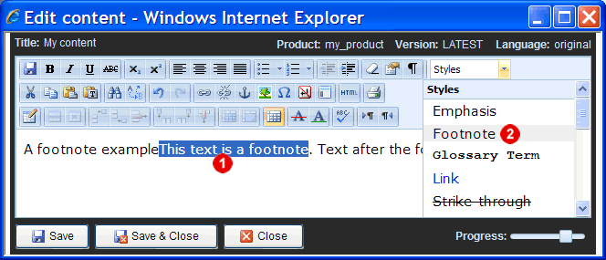
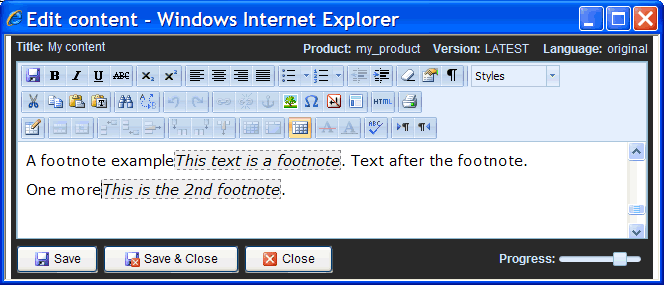
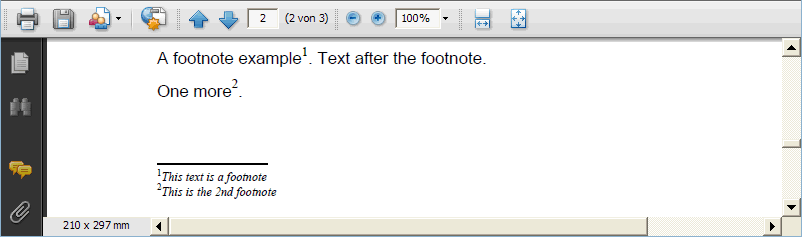
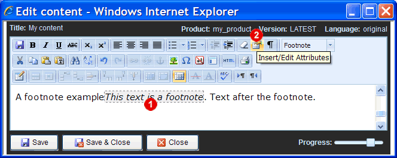
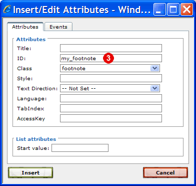
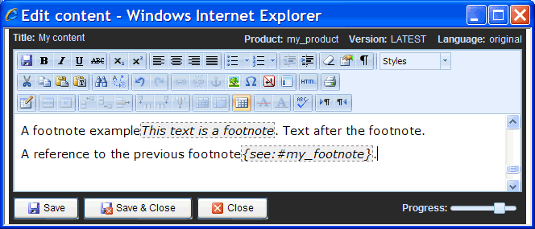
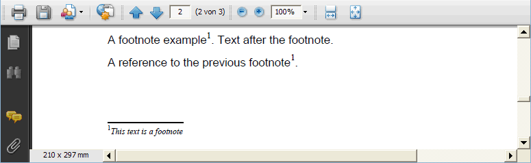

1.13.7. Creating footnotes
In Docmenta a footnote is any text to which the inline-style "footnote" is applied. The inline-style "footnote" is a predefined styles. If the inline-style "footnote" does not exist, then just create a new inline-style with ID "footnote" and set the desired CSS properties (see Section 1.3.5, “User-defined styles” on how to create an inline-style).
To create a footnote, enter the text of the footnote in the content-editor at the position where the footnote reference shall be inserted. Then select the footnote text and apply the inline-style with ID "footnote":

Figure 1.13.40. Applying the footnote style
After having applied the "footnote" style, the footnote text is highlighted in the content-editor with grey background color and dashed border-line:

Figure 1.13.41. Highlighting of footnotes in content-editor
In HTML output the footnotes are collected and output at the appropriate location, e.g. at the end of each chapter. Furthermore in HTML output footnotes are active links. In print output the footnotes are shown at the end of the page where the footnote reference is located.
You can check the rendering of the footnotes for print output by creating a PDF preview of the content-node:

Figure 1.13.42. PDF preview of footnotes
By default footnotes are numbered with decimal numbers. However, a different numbering format (e.g. i, ii, iii, iv,...) can be set in the output-configuration (see Section 1.8.2, “Output configurations” in this tutorial).
You can insert further references at different positions within the content to an existing footnote. To do this, assign an ID to the footnote text, i.e. place the cursor within the text that is marked as footnote  and then click the "Insert/Edit attributes"
and then click the "Insert/Edit attributes"  button
button  :
:

Figure 1.13.43. Assigning an ID attribute to the footnote
In the opened dialog enter an ID  , e.g. "my_footnote", and close the dialog by clicking "Insert":
, e.g. "my_footnote", and close the dialog by clicking "Insert":

Figure 1.13.44. Entering a footnote ID
Now that the existing footnote has an ID, you can create a new footnote that references the existing footnote. Create the new footnote the same way as a normal footnote, but instead of the footnote text, enter the text "{see:#target_ID}", where target_ID is the ID of the footnote to be referenced:

Figure 1.13.45. Referencing an existing footnote
As you can see in the PDF preview, only one footnote is created which is referenced from two positions within the text:

Figure 1.13.46. Multiple references to the same footnote